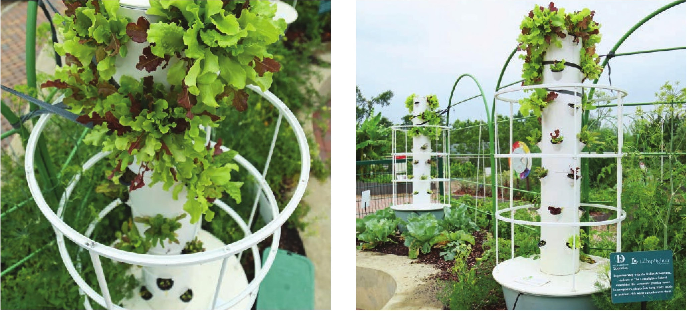

like tomatoes, eggplant, and peppers may not have the support they require if grown in a vertical garden. Most vertical hydroponic systems are best suited for leafy greens, herbs, and strawberries. The second major consideration is the light requirement of the chosen crop. Vertical gardens are notorious for having light issues if poorly designed or positioned. Sometimes vertical systems cast shade on lower crops. Insufficient light for lower crops may not be an issue during summer when there is a lot of light, but in lower light conditions this can be a problem. Although this book focuses on hydroponics, hydroponics is not the only option when selecting a vertical garden design. The garden shown in the following project could easily be modified to use a potting mix and receive hand waterings. I personally find that putting in the initial effort of building a hydroponic system pays off in the long run because I don't have to remember to water my plants, but to each his or her own— this is DIY! Here are some of the common vertical hydroponic garden setups. AEROPONIC TOWERS Aeroponic systems can be either low or high pressure. A high-pressure aeroponic vertical garden will generally have a main irrigation line in the middle of a large tube or square. This main irrigation line will have evenly spaced foggers or misters that emit a fine mist for the plant roots positioned on the inside of the outer tube or square. These systems require a decent amount of pressure and can be prone to clogging. An irrigation system that uses misters or foggers requires the use of a high-quality fertilizer that will not precipitate. The grower must also be cautious of leaves and roots falling into the system, because these may break down and clog emitters. A low-pressure aeroponic vertical garden will also have a main irrigation in the middle of a large tube or square but it will only release the nutrient solution at the top Aeroponic towers feature a tubular tower with evenly spaced planting pockets on the outside of the tower. A central irrigation line runs vertically up the length of the tower and provides pressurized water that is dispersed to the plants through foggers or emitters inside the tower. 116 DIY HYDROPONIC GARDENS
